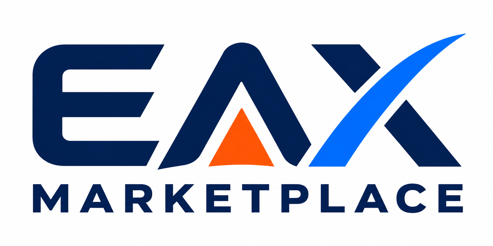

Drilling and Directional Services
Drilling services, directional drilling, geosteering, MWD, LWD, mud logging, coring and well planning support.

Services
EAX Marketplace connects operators, procurement teams and rig contractors with verified oilfield service companies covering drilling, completion, workover, intervention, inspection, maintenance and asset integrity needs worldwide.
Service coverage is grouped around operational needs, technical disciplines and the way buyers source specialist providers for oilfield programmes.
Drilling services, directional drilling, geosteering, MWD, LWD, mud logging, coring and well planning support.
Cementing services, drilling fluids, mud engineering, casing running and well construction support.
Wireline, slickline, e-line, coiled tubing, fishing, milling, workover and well intervention services.
NDT, tubular inspection, equipment inspection, maintenance, repair, refurbishment and asset reliability services.
Well integrity, pressure control, well control, blowout prevention, well testing and abandonment support.
Marine support, offshore logistics, lifting services, crane services, waste management, HSE and field support.
Oilfield service procurement depends on technical capability, operating region, mobilisation timing and verified company information. EAX service categories are designed to help buyers move from a project need to a focused shortlist of relevant providers.
Useful service profile details include service line, operating geography, equipment availability, crew capability, certifications, HSE standards, project experience, response time and preferred enquiry contact.
This structure helps buyers compare providers for planned campaigns as well as urgent operational needs. A clear service profile can show whether a company is suited to drilling support, completion work, intervention, inspection or ongoing asset reliability programmes. It also supports more relevant enquiries from buyers who already understand the required scope.
Founding suppliers can prepare service descriptions, capability statements and supporting documents before the marketplace opens. EAX can help turn existing company material into structured service profiles that are easier for buyers to search.
Service companies can use EAX to present technical capability without relying only on general brochure language. More specific service data helps procurement teams understand where a provider operates, what it can mobilise and which project types match its experience. This creates a stronger supplier profile for both local and international opportunities.
EAX is being built for buyers who need to identify qualified service companies for tenders, regional work scopes, urgent field support and long-term operational relationships.
Help buyers find qualified service companies close to their operating areas.
Surface technical disciplines such as MWD/LWD, wireline, intervention and inspection.
Source support for drilling, completion, workover and decommissioning programmes.
Prepare service categories and company profiles for early marketplace visibility.
Register as a founding supplier and prepare your service categories for early marketplace visibility.